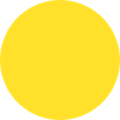

Artwork
The artwork for our game will be very simple. We can use colored Node objects to act as Layers and simple squares and circles to represent the germs and pills in the original Dr. Mario game.
For simplicity purposes we can use a simple colored circle to represent the germs. Four colors seems like enough. Example:

We can also use a simple colored square to represent the pills. Example:
This will take many color combinations. Since we can rotate pieces we don't need quite as many conbinations as you might think. Take a look at the following table:
| . | R | B | Y | G |
|---|---|---|---|---|
| R | y | y | y | y |
| B | x | y | y | y |
| Y | x | x | y | y |
| G | x | x | x | y |
We don't need a designer or artist to do this for us! We can code right? Let's combine the 2 squares programatically. We will go through this step further on in this tutorial.
With our art in hand, let's get started on the good stuff. Laying out our game and writing some code. Code, code, code-er.